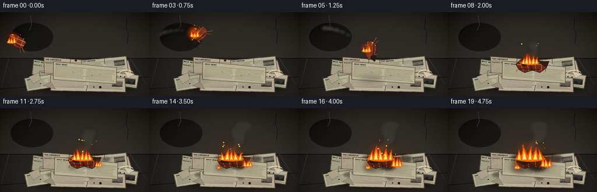
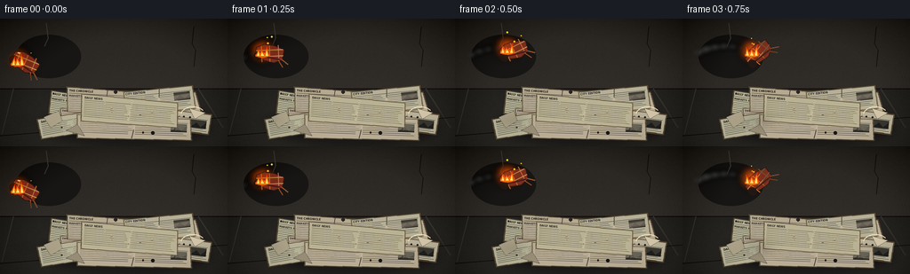

CODING AGENTS AS PIXEL WORLD MODELS
traex/GPT-5.6-Sol · phygen_145
点击播放 · 原生 RGB 像素
逐轮保存的候选
回放视频、检查图与代码变化。
每份候选均可单独播放。实际图片检查记录在下方工具轨迹中。
候选 01播放与检查图
点击播放 · 原生 RGB 像素


展开代码变化
--- 上一保存版本
+++ 本次保存版本
@@ -0,0 +1,331 @@
+from pathlib import Path
+import math, random
+import numpy as np
+from PIL import Image, ImageDraw, ImageFont, ImageFilter
+import artifact_io
+
+# Deterministic, hand-built 2-D animation. It is rendered at 3x resolution and
+# reduced at the end so that the small newspaper type, cloth weave and flames
+# remain clean at the requested resolution.
+W, H, S = 256, 144, 3
+RW, RH = W*S, H*S
+ROOT = Path(__file__).resolve().parent
+random.seed(145)
+
+try:
+ FONT_BOLD = "/usr/share/fonts/truetype/dejavu/DejaVuSansCondensed-Bold.ttf"
+ FONT_REG = "/usr/share/fonts/truetype/dejavu/DejaVuSans.ttf"
+ # Verify now; fall back to Pillow's bitmap face if unavailable.
+ ImageFont.truetype(FONT_REG, 12)
+except OSError:
+ FONT_BOLD = FONT_REG = None
+
+def font(px, bold=False):
+ if FONT_REG:
+ return ImageFont.truetype(FONT_BOLD if bold else FONT_REG, max(4, int(px*S)))
+ return ImageFont.load_default()
+
+def sp(points):
+ return [(int(x*S), int(y*S)) for x,y in points]
+
+def layer():
+ return Image.new("RGBA", (RW,RH), (0,0,0,0))
+
+def composite(base, over):
+ return Image.alpha_composite(base, over)
+
+def glow_ellipse(base, box, color, blur):
+ g = layer(); d = ImageDraw.Draw(g)
+ d.ellipse(tuple(int(v*S) for v in box), fill=color)
+ g = g.filter(ImageFilter.GaussianBlur(blur*S))
+ return composite(base, g)
+
+def make_background(frame, fire_strength):
+ # A dim, worn plaster wall meeting a concrete floor. Fine noise is fixed
+ # in world-space while the warm illumination gently pulses.
+ yy, xx = np.mgrid[0:RH,0:RW]
+ rng = np.random.default_rng(119)
+ noise = rng.normal(0, 2.2, (RH,RW))
+ arr = np.zeros((RH,RW,3), dtype=np.float32)
+ horizon = int(79*S)
+ topgrad = yy / max(1,horizon)
+ floorgrad = (yy-horizon) / max(1,RH-horizon)
+ for c,v in enumerate((42,39,35)):
+ arr[:horizon,:,c] = v + 5*topgrad[:horizon]
+ for c,v in enumerate((35,33,30)):
+ arr[horizon:,:,c] = v + 12*floorgrad[horizon:]
+ # Fire-colored bounce on wall and floor after impact.
+ cx,cy=145*S,98*S
+ dist=((xx-cx)/(72*S))**2+((yy-cy)/(55*S))**2
+ warm=np.exp(-dist*2.0)*fire_strength
+ arr[:,:,0]+=30*warm; arr[:,:,1]+=12*warm; arr[:,:,2]-=2*warm
+ arr += noise[:,:,None]
+ arr=np.clip(arr,0,255).astype(np.uint8)
+ im=Image.fromarray(arr,"RGB").convert("RGBA")
+ d=ImageDraw.Draw(im,"RGBA")
+ d.line([(0,horizon),(RW,horizon)], fill=(13,12,11,150), width=S)
+ d.line(sp([(15,79),(2,130)]), fill=(57,54,49,70), width=1*S)
+ d.line(sp([(223,79),(251,123)]), fill=(57,54,49,55), width=1*S)
+ d.line(sp([(0,132),(256,111)]), fill=(18,18,17,50), width=1*S)
+ # Wall stains and cracks.
+ d.ellipse((18*S,18*S,91*S,67*S), fill=(23,22,20,25))
+ d.line(sp([(218,9),(216,28),(220,36),(218,54)]), fill=(22,21,20,90), width=S)
+ d.line(sp([(52,5),(54,22),(50,31)]), fill=(65,62,57,45), width=S)
+ return im
+
+def make_page(w,h,angle,idx, char=0.0):
+ # Irregular old page with real headline/column structure, rendered locally.
+ pw,ph=int(w*S),int(h*S)
+ p=Image.new("RGBA",(pw+8*S,ph+8*S),(0,0,0,0)); d=ImageDraw.Draw(p,"RGBA")
+ rnd=random.Random(300+idx)
+ margin=4*S
+ poly=[(margin+rnd.randint(0,2)*S,margin+rnd.randint(0,1)*S),
+ (margin+pw-rnd.randint(0,3)*S,margin+rnd.randint(0,2)*S),
+ (margin+pw-rnd.randint(0,2)*S,margin+ph-rnd.randint(0,2)*S),
+ (margin+rnd.randint(0,3)*S,margin+ph-rnd.randint(0,2)*S)]
+ base=(191-rnd.randint(0,12),181-rnd.randint(0,12),153-rnd.randint(0,9),255)
+ d.polygon(poly,fill=base,outline=(73,66,53,230),width=S)
+ # discolored edge
+ d.line(poly+[poly[0]], fill=(112,91,61,180), width=S)
+ x0,y0=margin+4*S,margin+2*S
+ title=["DAILY NEWS","EVENING POST","THE CHRONICLE","CITY EDITION"][idx%4]
+ d.text((x0,y0), title, font=font(3.6,True), fill=(35,33,29,230))
+ d.line((x0,y0+5*S,margin+pw-5*S,y0+5*S),fill=(48,44,37,210),width=max(1,S//2))
+ # Headline bar and dense columns.
+ if idx%3==0:
+ d.text((x0,y0+6*S), ["MARKETS FALL","LATE EDITION","CITY WAITS"][idx%3],
+ font=font(3.0,True),fill=(43,39,33,220))
+ sy=y0+10*S
+ else: sy=y0+7*S
+ colgap=3*S; usable=pw-9*S; cw=(usable-colgap)//2
+ for col in range(2):
+ lx=x0+col*(cw+colgap)
+ for j in range(max(2,int((ph/S-12)/2.1))):
+ length=cw-rnd.randint(0,5)*S
+ d.line((lx,sy+j*2*S,lx+length,sy+j*2*S),fill=(57,53,46,170),width=max(1,S//2))
+ # small archival photo block
+ if idx%2:
+ bx=margin+pw-24*S; by=margin+8*S
+ d.rectangle((bx,by,bx+18*S,by+9*S),fill=(76,73,65,170))
+ d.polygon([(bx,by+9*S),(bx+7*S,by+3*S),(bx+12*S,by+8*S),(bx+18*S,by+2*S),(bx+18*S,by+9*S)], fill=(42,43,40,150))
+ # age spots and crease
+ for _ in range(5):
+ x=margin+rnd.randint(3,max(4,int(w)-5))*S; y=margin+rnd.randint(2,max(3,int(h)-3))*S
+ r=rnd.choice([1,1,2])*S
+ d.ellipse((x-r,y-r,x+r,y+r),fill=(104,72,35,rnd.randint(12,35)))
+ d.line((margin+pw*.52,margin+2*S,margin+pw*.48,margin+ph-2*S),fill=(235,226,198,65),width=S)
+ if char>0:
+ cx=margin+pw*.54; cy=margin+ph*.35
+ rad=(4+char*14)*S
+ stain=Image.new("RGBA",p.size,(0,0,0,0)); sd=ImageDraw.Draw(stain)
+ sd.ellipse((cx-rad,cy-rad*.55,cx+rad,cy+rad*.55),fill=(34,24,17,int(90+110*char)))
+ stain=stain.filter(ImageFilter.GaussianBlur((1.4+char)*S))
+ p=Image.alpha_composite(p,stain)
+ return p.rotate(angle,resample=Image.Resampling.BICUBIC,expand=True)
+
+def paste_center(base, obj, cx,cy):
+ base.alpha_composite(obj,(int(cx*S-obj.width/2),int(cy*S-obj.height/2)))
+
+def draw_pile(base, frame):
+ # ground shadow
+ sh=layer(); sd=ImageDraw.Draw(sh)
+ sd.ellipse((49*S,100*S,235*S,141*S),fill=(0,0,0,155)); sh=sh.filter(ImageFilter.GaussianBlur(7*S)); base=composite(base,sh)
+ impact=max(0.0,min(1.0,(frame-5)/2))
+ spread=max(0.0,min(1.0,(frame-8)/10))
+ pages=[
+ (103,102,100,29,-9,0),(174,102,103,28,9,1),(129,112,125,30,3,2),
+ (199,116,78,25,-7,3),(82,119,78,25,10,4),(151,123,130,28,-2,5),
+ (119,94,91,30,-3,6),(179,92,82,29,6,7),(146,105,112,31,-5,8),
+ ]
+ for cx,cy,w,h,a,idx in pages:
+ # a few top sheets kick outward by a pixel at impact
+ dx=(idx%3-1)*impact*(2 if idx>=6 else .4)
+ dy=(1 if idx%2 else -1)*impact*(1 if idx>=6 else .3)
+ ch=spread*(.8 if idx>=6 else .32)
+ page=make_page(w,h,a,idx,ch)
+ paste_center(base,page,cx+dx,cy+dy)
+ # torn scraps and curled corners make the heap read as loose paper.
+ d=ImageDraw.Draw(base,"RGBA")
+ d.polygon(sp([(49,111),(66,104),(70,115),(57,123)]),fill=(171,161,136,255),outline=(77,68,54,255))
+ d.polygon(sp([(213,101),(231,106),(219,113)]),fill=(209,198,168,255),outline=(90,78,59,255))
+ d.polygon(sp([(74,126),(87,119),(95,132)]),fill=(151,141,118,255),outline=(67,61,51,255))
+ d.arc((203*S,99*S,231*S,118*S),190,326,fill=(238,225,190,180),width=S)
+ # blackening and an ember seam spreading under the rag
+ if spread>0:
+ stain=layer(); st=ImageDraw.Draw(stain)
+ r=(8+24*spread)*S
+ st.ellipse((145*S-r,91*S-r*.45,145*S+r,91*S+r*.55),fill=(25,17,12,int(80+90*spread)))
+ st.ellipse((125*S-r*.5,102*S-r*.25,125*S+r*.5,102*S+r*.25),fill=(47,25,10,int(60+80*spread)))
+ stain=stain.filter(ImageFilter.GaussianBlur((2+2*spread)*S)); base=composite(base,stain)
+ d=ImageDraw.Draw(base,"RGBA")
+ if spread>.35:
+ d.arc((118*S,94*S,164*S,119*S),190,349,fill=(255,74,14,int(100+100*spread)),width=max(S,int(1.2*S)))
+ return base
+
+def trajectory(ff):
+ u=max(0,min(1,ff/6.0))
+ return 28+116*u, 50-80*u+118*u*u
+
+def cloth_patch_air(frame):
+ # A tumbling, singed plaid rag.
+ cx,cy=trajectory(frame); u=frame/6
+ ang=-22+146*u
+ w,h=34,23
+ p=Image.new("RGBA",(w*S+10*S,h*S+10*S),(0,0,0,0)); d=ImageDraw.Draw(p,"RGBA")
+ m=5*S
+ shape=[(m+2*S,m+3*S),(m+11*S,m),(m+23*S,m+2*S),(m+34*S,m+7*S),(m+31*S,m+19*S),(m+21*S,m+22*S),(m+11*S,m+19*S),(m,m+13*S)]
+ d.polygon(shape,fill=(126,47,29,255),outline=(45,25,21,255),width=S)
+ # plaid weave clipped approximately to rag interior
+ for x in [m+8*S,m+17*S,m+27*S]: d.line((x,m+2*S,x,m+20*S),fill=(221,123,63,115),width=S)
+ for y in [m+7*S,m+14*S]: d.line((m+2*S,y,m+32*S,y),fill=(232,170,96,95),width=S)
+ d.line((m+2*S,m+12*S,m+28*S,m+18*S),fill=(80,30,24,180),width=2*S)
+ d.ellipse((m-1*S,m+8*S,m+8*S,m+18*S),fill=(34,23,20,230))
+ # loose threads
+ d.line((m+30*S,m+18*S,m+37*S,m+24*S),fill=(155,84,45,200),width=S)
+ d.line((m+27*S,m+20*S,m+31*S,m+27*S),fill=(159,78,42,180),width=S)
+ return p.rotate(ang,resample=Image.Resampling.BICUBIC,expand=True),cx,cy
+
+def draw_landed_cloth(base,frame):
+ p=max(0,min(1,(frame-6)/13))
+ d=ImageDraw.Draw(base,"RGBA")
+ pts=[(116,89),(125,81),(140,82),(150,79),(160,84),(174,84),(169,96),(158,104),(145,100),(132,104),(122,99)]
+ d.polygon(sp(pts),fill=(113-int(38*p),43-int(14*p),28-int(9*p),255),outline=(39,24,20,255),width=S)
+ # checks bend with the drape
+ for line in [[(123,84),(129,100)],[(135,82),(139,101)],[(149,81),(151,101)],[(162,84),(160,101)]]:
+ d.line(sp(line),fill=(216,109,54,110),width=S)
+ d.line(sp([(119,90),(169,90)]),fill=(225,135,65,90),width=S)
+ d.line(sp([(123,97),(159,98)]),fill=(70,25,23,180),width=2*S)
+ # folds/highlights
+ d.line(sp([(125,85),(141,91),(150,81)]),fill=(229,118,62,110),width=S)
+ d.line(sp([(141,91),(145,100)]),fill=(41,22,21,190),width=2*S)
+ d.polygon(sp([(156,84),(174,84),(169,94),(162,91)]),fill=(48,27,22,170))
+ # expanding char hole and bright rim
+ r=3+9*p
+ d.ellipse((int((131-r)*S),int((90-r*.55)*S),int((131+r)*S),int((90+r*.55)*S)),fill=(29,21,19,int(130+100*p)))
+ if p>.25:
+ d.arc((int((119-r*.2)*S),int((84-r*.2)*S),int((144+r*.25)*S),int((99+r*.3)*S)),170,355,fill=(255,86,18,int(110+100*p)),width=S)
+ # rag fringe
+ for x,dy in [(119,4),(130,5),(158,5),(168,4)]:
+ d.line(sp([(x,98),(x-1,98+dy)]),fill=(128,62,34,180),width=S)
+ return base
+
+def draw_smoke(base,frame,landed):
+ sm=layer(); d=ImageDraw.Draw(sm,"RGBA")
+ if not landed:
+ # trail follows past rag positions, so direction of throw is unmistakable
+ for k in range(1,8):
+ past=frame-k*.45
+ if past<0: continue
+ x,y=trajectory(past)
+ age=k*.45
+ x-=9+age*3; y-=3+age*2
+ r=(2.5+age*1.25)*S
+ shade=int(74+age*6); alpha=int(70-age*8)
+ d.ellipse((x*S-r,y*S-r*.7,x*S+r,y*S+r*.7),fill=(shade,shade,shade,alpha))
+ else:
+ # Continuous rising plume, subtly changing each frame but spatially coherent.
+ agef=frame-5
+ count=min(13,4+agef)
+ for k in range(count):
+ age=k*.52
+ x=142+4*math.sin(frame*.38-k*.72)+age*3.0
+ y=81-age*8.1
+ r=(3.3+age*1.65)*S
+ alpha=max(12,int(89-age*8))
+ shade=int(58+age*8)
+ d.ellipse((x*S-r*1.15,y*S-r*.72,x*S+r*1.15,y*S+r*.72),fill=(shade,shade-1,shade-3,alpha))
+ # smoke from newspaper edge after it catches
+ if frame>11:
+ for k in range(5):
+ age=k*.55
+ x=168+age*2+3*math.sin(frame*.4+k)
+ y=95-age*8
+ r=(2.5+age)*S
+ d.ellipse((x*S-r,y*S-r,x*S+r,y*S+r),fill=(63,61,57,max(15,65-k*10)))
+ sm=sm.filter(ImageFilter.GaussianBlur(2.5*S))
+ return composite(base,sm)
+
+def fire_lobes(base,cx,basey,scale,frame,count=4,seedoff=0):
+ # Additive-looking halo under crisp nested flame silhouettes.
+ pulse=.92+.10*math.sin(frame*1.63+seedoff)
+ g=layer(); gd=ImageDraw.Draw(g,"RGBA")
+ gd.ellipse(((cx-18*scale)*S,(basey-25*scale)*S,(cx+18*scale)*S,(basey+8*scale)*S),fill=(255,91,12,65))
+ g=g.filter(ImageFilter.GaussianBlur(7*S*scale)); base=composite(base,g)
+ outer=layer(); od=ImageDraw.Draw(outer,"RGBA")
+ inn=layer(); idr=ImageDraw.Draw(inn,"RGBA")
+ for j in range(count):
+ off=(j-(count-1)/2)*7.2*scale
+ h=(13+((j*7+seedoff)%9))*scale*pulse
+ wid=(4.7+(j%2)*1.6)*scale
+ sway=math.sin(frame*.78+j*1.91+seedoff)*3.2*scale
+ bx=cx+off
+ # pointed outer lobe with two shoulders
+ po=[(bx-wid,basey+1),(bx-wid*.75,basey-h*.25),(bx-wid*.35+sway*.25,basey-h*.58),
+ (bx+sway,basey-h),(bx+wid*.38+sway*.2,basey-h*.54),(bx+wid*.83,basey-h*.24),(bx+wid,basey+1)]
+ od.polygon(sp(po),fill=(235,58,8,235))
+ od.polygon(sp([(bx-wid*.75,basey),(bx+sway*.45,basey-h*.72),(bx+wid*.7,basey)]),fill=(255,142,13,245))
+ hi=h*.48; wi=wid*.44
+ pi=[(bx-wi,basey),(bx+sway*.22,basey-hi),(bx+wi,basey)]
+ idr.polygon(sp(pi),fill=(255,236,121,245))
+ # orange base bridging the tongues
+ od.ellipse(((cx-(count*4)*scale)*S,(basey-5*scale)*S,(cx+(count*4)*scale)*S,(basey+3*scale)*S),fill=(255,111,7,235))
+ base=composite(base,outer); base=composite(base,inn)
+ return base
+
+def draw_sparks(base,frame,landed):
+ d=ImageDraw.Draw(base,"RGBA")
+ rng=random.Random(900+frame)
+ n=(10 if frame in (6,7) else (7 if landed and frame>10 else 3))
+ for i in range(n):
+ if landed:
+ x=145+rng.uniform(-20,22); y=88-rng.uniform(5,35)
+ else:
+ x,y=trajectory(frame); x+=rng.uniform(-9,8); y-=rng.uniform(8,22)
+ rr=rng.choice([.45,.6,1.0])
+ d.ellipse(((x-rr)*S,(y-rr)*S,(x+rr)*S,(y+rr)*S),fill=(255,180+rng.randint(0,60),50,220))
+ return base
+
+def render(frame):
+ landed=frame>=6
+ spread=max(0,min(1,(frame-7)/12))
+ fire_strength=(.12 if not landed else .35+.65*spread)*(.94+.06*math.sin(frame*1.4))
+ im=make_background(frame,fire_strength)
+ # The smoke belongs behind the foreground fire, but in front of the wall.
+ im=draw_smoke(im,frame,landed)
+ im=draw_pile(im,frame)
+ if not landed:
+ rag,cx,cy=cloth_patch_air(frame)
+ # shadow underneath tracks the arc and tightens near impact
+ sh=layer(); sd=ImageDraw.Draw(sh)
+ u=frame/6; sw=13+9*u
+ sd.ellipse(((cx-sw)*S,112*S,(cx+sw)*S,(116+3*u)*S),fill=(0,0,0,int(35+75*u)))
+ sh=sh.filter(ImageFilter.GaussianBlur(5*S)); im=composite(im,sh)
+ paste_center(im,rag,cx,cy)
+ # fire rides on the burning left/lower rag edge while remaining upright.
+ im=fire_lobes(im,cx-8,cy+2,.65,frame,3,2)
+ else:
+ im=draw_landed_cloth(im,frame)
+ # Main rag fire grows, then the right-hand newspaper edge catches.
+ main_scale=.73+spread*.55
+ im=fire_lobes(im,141,88,main_scale,frame,5,1)
+ if frame>=10:
+ sec=min(1,(frame-9)/7)
+ im=fire_lobes(im,169,99,.34+.45*sec,frame,3,7)
+ if frame>=14:
+ im=fire_lobes(im,119,103,.28+.27*(frame-14)/5,frame,2,12)
+ im=draw_sparks(im,frame,landed)
+ # A gentle vignette focuses attention and adds photographic depth.
+ yy,xx=np.mgrid[0:RH,0:RW]
+ dx=(xx-RW*.52)/(RW*.72); dy=(yy-RH*.55)/(RH*.8)
+ vig=np.clip((dx*dx+dy*dy-.22)*36,0,28).astype(np.uint8)
+ a=np.array(im.convert("RGB"),dtype=np.int16)-vig[:,:,None]
+ out=Image.fromarray(np.clip(a,0,255).astype(np.uint8),"RGB")
+ out=out.resize((W,H),Image.Resampling.LANCZOS)
+ return np.asarray(out,dtype=np.uint8)
+
+def main():
+ frames=np.stack([render(i) for i in range(20)],axis=0)
+ artifact_io.save(frames,ROOT)
+
+if __name__=="__main__":
+ main()
可观测工具轨迹
实际执行的命令与返回图片。
命令 1exit 0
/bin/bash -lc "cat prompt.txt && printf '\\n--- RULES ---\\n' && cat GENERATION_RULES.md && printf '\\n--- SPEC ---\\n' && cat task_spec.json"
命令 2exit 0
/bin/bash -lc "find . -maxdepth 2 -type f -printf '%p\\n' | sort && printf '\\n--- BINARIES ---\\n' && command -v ffmpeg && command -v python3 && command -v blender || true"
命令 3exit 0
/bin/bash -lc 'cat artifact_io.py'
命令 4exit 0
/bin/bash -lc "cat > generate.py <<'PY'
from pathlib import Path
import math, random
import numpy as np
from PIL import Image, ImageDraw, ImageFont, ImageFilter
import artifact_io
# Deterministic, hand-built 2-D animation. It is rendered at 3x resolution and
# reduced at the end so that the small newspaper type, cloth weave and flames
# remain clean at the requested resolution.
W, H, S = 256, 144, 3
RW, RH = W*S, H*S
ROOT = Path(__file__).resolve().parent
random.seed(145)
try:
FONT_BOLD = \"/usr/share/fonts/truetype/dejavu/DejaVuSansCondensed-Bold.ttf\"
FONT_REG = \"/usr/share/fonts/truetype/dejavu/DejaVuSans.ttf\"
# Verify now; fall back to Pillow's bitmap face if unavailable.
ImageFont.truetype(FONT_REG, 12)
except OSError:
FONT_BOLD = FONT_REG = None
def font(px, bold=False):
if FONT_REG:
return ImageFont.truetype(FONT_BOLD if bold else FONT_REG, max(4, int(px*S)))
return ImageFont.load_default()
def sp(points):
return [(int(x*S), int(y*S)) for x,y in points]
def layer():
return Image.new(\"RGBA\", (RW,RH), (0,0,0,0))
def composite(base, over):
return Image.alpha_composite(base, over)
def glow_ellipse(base, box, color, blur):
g = layer(); d = ImageDraw.Draw(g)
d.ellipse(tuple(int(v*S) for v in box), fill=color)
g = g.filter(ImageFilter.GaussianBlur(blur*S))
return composite(base, g)
def make_background(frame, fire_strength):
# A dim, worn plaster wall meeting a concrete floor. Fine noise is fixed
# in world-space while the warm illumination gently pulses.
yy, xx = np.mgrid[0:RH,0:RW]
rng = np.random.default_rng(119)
noise = rng.normal(0, 2.2, (RH,RW))
arr = np.zeros((RH,RW,3), dtype=np.float32)
horizon = int(79*S)
topgrad = yy / max(1,horizon)
floorgrad = (yy-horizon) / max(1,RH-horizon)
for c,v in enumerate((42,39,35)):
arr[:horizon,:,c] = v + 5*topgrad[:horizon]
for c,v in enumerate((35,33,30)):
arr[horizon:,:,c] = v + 12*floorgrad[horizon:]
# Fire-colored bounce on wall and floor after impact.
cx,cy=145*S,98*S
dist=((xx-cx)/(72*S))**2+((yy-cy)/(55*S))**2
warm=np.exp(-dist*2.0)*fire_strength
arr[:,:,0]+=30*warm; arr[:,:,1]+=12*warm; arr[:,:,2]-=2*warm
arr += noise[:,:,None]
arr=np.clip(arr,0,255).astype(np.uint8)
im=Image.fromarray(arr,\"RGB\").convert(\"RGBA\")
d=ImageDraw.Draw(im,\"RGBA\")
d.line([(0,horizon),(RW,horizon)], fill=(13,12,11,150), width=S)
d.line(sp([(15,79),(2,130)]), fill=(57,54,49,70), width=1*S)
d.line(sp([(223,79),(251,123)]), fill=(57,54,49,55), width=1*S)
d.line(sp([(0,132),(256,111)]), fill=(18,18,17,50), width=1*S)
# Wall stains and cracks.
d.ellipse((18*S,18*S,91*S,67*S), fill=(23,22,20,25))
d.line(sp([(218,9),(216,28),(220,36),(218,54)]), fill=(22,21,20,90), width=S)
d.line(sp([(52,5),(54,22),(50,31)]), fill=(65,62,57,45), width=S)
return im
def make_page(w,h,angle,idx, char=0.0):
# Irregular old page with real headline/column structure, rendered locally.
pw,ph=int(w*S),int(h*S)
p=Image.new(\"RGBA\",(pw+8*S,ph+8*S),(0,0,0,0)); d=ImageDraw.Draw(p,\"RGBA\")
rnd=random.Random(300+idx)
margin=4*S
poly=[(margin+rnd.randint(0,2)*S,margin+rnd.randint(0,1)*S),
(margin+pw-rnd.randint(0,3)*S,margin+rnd.randint(0,2)*S),
(margin+pw-rnd.randint(0,2)*S,margin+ph-rnd.randint(0,2)*S),
(margin+rnd.randint(0,3)*S,margin+ph-rnd.randint(0,2)*S)]
base=(191-rnd.randint(0,12),181-rnd.randint(0,12),153-rnd.randint(0,9),255)
d.polygon(poly,fill=base,outline=(73,66,53,230),width=S)
# discolored edge
d.line(poly+[poly[0]], fill=(112,91,61,180), width=S)
x0,y0=margin+4*S,margin+2*S
title=[\"DAILY NEWS\",\"EVENING POST\",\"THE CHRONICLE\",\"CITY EDITION\"][idx%4]
d.text((x0,y0), title, font=font(3.6,True), fill=(35,33,29,230))
d.line((x0,y0+5*S,margin+pw-5*S,y0+5*S),fill=(48,44,37,210),width=max(1,S//2))
# Headline bar and dense columns.
if idx%3==0:
d.text((x0,y0+6*S), [\"MARKETS FALL\",\"LATE EDITION\",\"CITY WAITS\"][idx%3],
font=font(3.0,True),fill=(43,39,33,220))
sy=y0+10*S
else: sy=y0+7*S
colgap=3*S; usable=pw-9*S; cw=(usable-colgap)//2
for col in range(2):
lx=x0+col*(cw+colgap)
for j in range(max(2,int((ph/S-12)/2.1))):
length=cw-rnd.randint(0,5)*S
d.line((lx,sy+j*2*S,lx+length,sy+j*2*S),fill=(57,53,46,170),width=max(1,S//2))
# small archival photo block
if idx%2:
bx=margin+pw-24*S; by=margin+8*S
d.rectangle((bx,by,bx+18*S,by+9*S),fill=(76,73,65,170))
d.polygon([(bx,by+9*S),(bx+7*S,by+3*S),(bx+12*S,by+8*S),(bx+18*S,by+2*S),(bx+18*S,by+9*S)], fill=(42,43,40,150))
# age spots and crease
for _ in range(5):
x=margin+rnd.randint(3,max(4,int(w)-5))*S; y=margin+rnd.randint(2,max(3,int(h)-3))*S
r=rnd.choice([1,1,2])*S
d.ellipse((x-r,y-r,x+r,y+r),fill=(104,72,35,rnd.randint(12,35)))
d.line((margin+pw*.52,margin+2*S,margin+pw*.48,margin+ph-2*S),fill=(235,226,198,65),width=S)
if char>0:
cx=margin+pw*.54; cy=margin+ph*.35
rad=(4+char*14)*S
stain=Image.new(\"RGBA\",p.size,(0,0,0,0)); sd=ImageDraw.Draw(stain)
sd.ellipse((cx-rad,cy-rad*.55,cx+rad,cy+rad*.55),fill=(34,24,17,int(90+110*char)))
stain=stain.filter(ImageFilter.GaussianBlur((1.4+char)*S))
p=Image.alpha_composite(p,stain)
return p.rotate(angle,resample=Image.Resampling.BICUBIC,expand=True)
def paste_center(base, obj, cx,cy):
base.alpha_composite(obj,(int(cx*S-obj.width/2),int(cy*S-obj.height/2)))
def draw_pile(base, frame):
# ground shadow
sh=layer(); sd=ImageDraw.Draw(sh)
sd.ellipse((49*S,100*S,235*S,141*S),fill=(0,0,0,155)); sh=sh.filter(ImageFilter.GaussianBlur(7*S)); base=composite(base,sh)
impact=max(0.0,min(1.0,(frame-5)/2))
spread=max(0.0,min(1.0,(frame-8)/10))
pages=[
(103,102,100,29,-9,0),(174,102,103,28,9,1),(129,112,125,30,3,2),
(199,116,78,25,-7,3),(82,119,78,25,10,4),(151,123,130,28,-2,5),
(119,94,91,30,-3,6),(179,92,82,29,6,7),(146,105,112,31,-5,8),
]
for cx,cy,w,h,a,idx in pages:
# a few top sheets kick outward by a pixel at impact
dx=(idx%3-1)*impact*(2 if idx>=6 else .4)
dy=(1 if idx%2 else -1)*impact*(1 if idx>=6 else .3)
ch=spread*(.8 if idx>=6 else .32)
page=make_page(w,h,a,idx,ch)
paste_center(base,page,cx+dx,cy+dy)
# torn scraps and curled corners make the heap read as loose paper.
d=ImageDraw.Draw(base,\"RGBA\")
d.polygon(sp([(49,111),(66,104),(70,115),(57,123)]),fill=(171,161,136,255),outline=(77,68,54,255))
d.polygon(sp([(213,101),(231,106),(219,113)]),fill=(209,198,168,255),outline=(90,78,59,255))
d.polygon(sp([(74,126),(87,119),(95,132)]),fill=(151,141,118,255),outline=(67,61,51,255))
d.arc((203*S,99*S,231*S,118*S),190,326,fill=(238,225,190,180),width=S)
# blackening and an ember seam spreading under the rag
if spread>0:
stain=layer(); st=ImageDraw.Draw(stain)
r=(8+24*spread)*S
st.ellipse((145*S-r,91*S-r*.45,145*S+r,91*S+r*.55),fill=(25,17,12,int(80+90*spread)))
st.ellipse((125*S-r*.5,102*S-r*.25,125*S+r*.5,102*S+r*.25),fill=(47,25,10,int(60+80*spread)))
stain=stain.filter(ImageFilter.GaussianBlur((2+2*spread)*S)); base=composite(base,stain)
d=ImageDraw.Draw(base,\"RGBA\")
if spread>.35:
d.arc((118*S,94*S,164*S,119*S),190,349,fill=(255,74,14,int(100+100*spread)),width=max(S,int(1.2*S)))
return base
def trajectory(ff):
u=max(0,min(1,ff/6.0))
return 28+116*u, 50-80*u+118*u*u
def cloth_patch_air(frame):
# A tumbling, singed plaid rag.
cx,cy=trajectory(frame); u=frame/6
ang=-22+146*u
w,h=34,23
p=Image.new(\"RGBA\",(w*S+10*S,h*S+10*S),(0,0,0,0)); d=ImageDraw.Draw(p,\"RGBA\")
m=5*S
shape=[(m+2*S,m+3*S),(m+11*S,m),(m+23*S,m+2*S),(m+34*S,m+7*S),(m+31*S,m+19*S),(m+21*S,m+22*S),(m+11*S,m+19*S),(m,m+13*S)]
d.polygon(shape,fill=(126,47,29,255),outline=(45,25,21,255),width=S)
# plaid weave clipped approximately to rag interior
for x in [m+8*S,m+17*S,m+27*S]: d.line((x,m+2*S,x,m+20*S),fill=(221,123,63,115),width=S)
for y in [m+7*S,m+14*S]: d.line((m+2*S,y,m+32*S,y),fill=(232,170,96,95),width=S)
d.line((m+2*S,m+12*S,m+28*S,m+18*S),fill=(80,30,24,180),width=2*S)
d.ellipse((m-1*S,m+8*S,m+8*S,m+18*S),fill=(34,23,20,230))
# loose threads
d.line((m+30*S,m+18*S,m+37*S,m+24*S),fill=(155,84,45,200),width=S)
d.line((m+27*S,m+20*S,m+31*S,m+27*S),fill=(159,78,42,180),width=S)
return p.rotate(ang,resample=Image.Resampling.BICUBIC,expand=True),cx,cy
def draw_landed_cloth(base,frame):
p=max(0,min(1,(frame-6)/13))
d=ImageDraw.Draw(base,\"RGBA\")
pts=[(116,89),(125,81),(140,82),(150,79),(160,84),(174,84),(169,96),(158,104),(145,100),(132,104),(122,99)]
d.polygon(sp(pts),fill=(113-int(38*p),43-int(14*p),28-int(9*p),255),outline=(39,24,20,255),width=S)
# checks bend with the drape
for line in [[(123,84),(129,100)],[(135,82),(139,101)],[(149,81),(151,101)],[(162,84),(160,101)]]:
d.line(sp(line),fill=(216,109,54,110),width=S)
d.line(sp([(119,90),(169,90)]),fill=(225,135,65,90),width=S)
d.line(sp([(123,97),(159,98)]),fill=(70,25,23,180),width=2*S)
# folds/highlights
d.line(sp([(125,85),(141,91),(150,81)]),fill=(229,118,62,110),width=S)
d.line(sp([(141,91),(145,100)]),fill=(41,22,21,190),width=2*S)
d.polygon(sp([(156,84),(174,84),(169,94),(162,91)]),fill=(48,27,22,170))
# expanding char hole and bright rim
r=3+9*p
d.ellipse((int((131-r)*S),int((90-r*.55)*S),int((131+r)*S),int((90+r*.55)*S)),fill=(29,21,19,int(130+100*p)))
if p>.25:
d.arc((int((119-r*.2)*S),int((84-r*.2)*S),int((144+r*.25)*S),int((99+r*.3)*S)),170,355,fill=(255,86,18,int(110+100*p)),width=S)
# rag fringe
for x,dy in [(119,4),(130,5),(158,5),(168,4)]:
d.line(sp([(x,98),(x-1,98+dy)]),fill=(128,62,34,180),width=S)
return base
def draw_smoke(base,frame,landed):
sm=layer(); d=ImageDraw.Draw(sm,\"RGBA\")
if not landed:
# trail follows past rag positions, so direction of throw is unmistakable
for k in range(1,8):
past=frame-k*.45
if past<0: continue
x,y=trajectory(past)
age=k*.45
x-=9+age*3; y-=3+age*2
r=(2.5+age*1.25)*S
shade=int(74+age*6); alpha=int(70-age*8)
d.ellipse((x*S-r,y*S-r*.7,x*S+r,y*S+r*.7),fill=(shade,shade,shade,alpha))
else:
# Continuous rising plume, subtly changing each frame but spatially coherent.
agef=frame-5
count=min(13,4+agef)
for k in range(count):
age=k*.52
x=142+4*math.sin(frame*.38-k*.72)+age*3.0
y=81-age*8.1
r=(3.3+age*1.65)*S
alpha=max(12,int(89-age*8))
shade=int(58+age*8)
d.ellipse((x*S-r*1.15,y*S-r*.72,x*S+r*1.15,y*S+r*.72),fill=(shade,shade-1,shade-3,alpha))
# smoke from newspaper edge after it catches
if frame>11:
for k in range(5):
age=k*.55
x=168+age*2+3*math.sin(frame*.4+k)
y=95-age*8
r=(2.5+age)*S
d.ellipse((x*S-r,y*S-r,x*S+r,y*S+r),fill=(63,61,57,max(15,65-k*10)))
sm=sm.filter(ImageFilter.GaussianBlur(2.5*S))
return composite(base,sm)
def fire_lobes(base,cx,basey,scale,frame,count=4,seedoff=0):
# Additive-looking halo under crisp nested flame silhouettes.
pulse=.92+.10*math.sin(frame*1.63+seedoff)
g=layer(); gd=ImageDraw.Draw(g,\"RGBA\")
gd.ellipse(((cx-18*scale)*S,(basey-25*scale)*S,(cx+18*scale)*S,(basey+8*scale)*S),fill=(255,91,12,65))
g=g.filter(ImageFilter.GaussianBlur(7*S*scale)); base=composite(base,g)
outer=layer(); od=ImageDraw.Draw(outer,\"RGBA\")
inn=layer(); idr=ImageDraw.Draw(inn,\"RGBA\")
for j in range(count):
off=(j-(count-1)/2)*7.2*scale
h=(13+((j*7+seedoff)%9))*scale*pulse
wid=(4.7+(j%2)*1.6)*scale
sway=math.sin(frame*.78+j*1.91+seedoff)*3.2*scale
bx=cx+off
# pointed outer lobe with two shoulders
po=[(bx-wid,basey+1),(bx-wid*.75,basey-h*.25),(bx-wid*.35+sway*.25,basey-h*.58),
(bx+sway,basey-h),(bx+wid*.38+sway*.2,basey-h*.54),(bx+wid*.83,basey-h*.24),(bx+wid,basey+1)]
od.polygon(sp(po),fill=(235,58,8,235))
od.polygon(sp([(bx-wid*.75,basey),(bx+sway*.45,basey-h*.72),(bx+wid*.7,basey)]),fill=(255,142,13,245))
hi=h*.48; wi=wid*.44
pi=[(bx-wi,basey),(bx+sway*.22,basey-hi),(bx+wi,basey)]
idr.polygon(sp(pi),fill=(255,236,121,245))
# orange base bridging the tongues
od.ellipse(((cx-(count*4)*scale)*S,(basey-5*scale)*S,(cx+(count*4)*scale)*S,(basey+3*scale)*S),fill=(255,111,7,235))
base=composite(base,outer); base=composite(base,inn)
return base
def draw_sparks(base,frame,landed):
d=ImageDraw.Draw(base,\"RGBA\")
rng=random.Random(900+frame)
n=(10 if frame in (6,7) else (7 if landed and frame>10 else 3))
for i in range(n):
if landed:
x=145+rng.uniform(-20,22); y=88-rng.uniform(5,35)
else:
x,y=trajectory(frame); x+=rng.uniform(-9,8); y-=rng.uniform(8,22)
rr=rng.choice([.45,.6,1.0])
d.ellipse(((x-rr)*S,(y-rr)*S,(x+rr)*S,(y+rr)*S),fill=(255,180+rng.randint(0,60),50,220))
return base
def render(frame):
landed=frame>=6
spread=max(0,min(1,(frame-7)/12))
fire_strength=(.12 if not landed else .35+.65*spread)*(.94+.06*math.sin(frame*1.4))
im=make_background(frame,fire_strength)
# The smoke belongs behind the foreground fire, but in front of the wall.
im=draw_smoke(im,frame,landed)
im=draw_pile(im,frame)
if not landed:
rag,cx,cy=cloth_patch_air(frame)
# shadow underneath tracks the arc and tightens near impact
sh=layer(); sd=ImageDraw.Draw(sh)
u=frame/6; sw=13+9*u
sd.ellipse(((cx-sw)*S,112*S,(cx+sw)*S,(116+3*u)*S),fill=(0,0,0,int(35+75*u)))
sh=sh.filter(ImageFilter.GaussianBlur(5*S)); im=composite(im,sh)
paste_center(im,rag,cx,cy)
# fire rides on the burning left/lower rag edge while remaining upright.
im=fire_lobes(im,cx-8,cy+2,.65,frame,3,2)
else:
im=draw_landed_cloth(im,frame)
# Main rag fire grows, then the right-hand newspaper edge catches.
main_scale=.73+spread*.55
im=fire_lobes(im,141,88,main_scale,frame,5,1)
if frame>=10:
sec=min(1,(frame-9)/7)
im=fire_lobes(im,169,99,.34+.45*sec,frame,3,7)
if frame>=14:
im=fire_lobes(im,119,103,.28+.27*(frame-14)/5,frame,2,12)
im=draw_sparks(im,frame,landed)
# A gentle vignette focuses attention and adds photographic depth.
yy,xx=np.mgrid[0:RH,0:RW]
dx=(xx-RW*.52)/(RW*.72); dy=(yy-RH*.55)/(RH*.8)
vig=np.clip((dx*dx+dy*dy-.22)*36,0,28).astype(np.uint8)
a=np.array(im.convert(\"RGB\"),dtype=np.int16)-vig[:,:,None]
out=Image.fromarray(np.clip(a,0,255).astype(np.uint8),\"RGB\")
out=out.resize((W,H),Image.Resampling.LANCZOS)
return np.asarray(out,dtype=np.uint8)
def main():
frames=np.stack([render(i) for i in range(20)],axis=0)
artifact_io.save(frames,ROOT)
if __name__==\"__main__\":
main()
PY
python3 generate.py
ls -lh pixels.npz inspection.png index.html frames/00.png frames/19.png"命令 5exit 0
/bin/bash -lc "python3 - <<'PY'
from PIL import Image
import numpy as np, json
z=np.load('pixels.npz')['pixels']
print('packed tensor:',z.shape,z.dtype)
fs=[]
for i in range(20):
im=Image.open(f'frames/{i:02d}.png')
fs.append(np.asarray(im))
a=np.stack(fs)
print('frames:',a.shape,a.dtype,'range',a.min(),a.max())
print('mean RGB',a.mean((0,1,2)).round(2))
print('mean abs temporal diffs',np.abs(a[1:].astype(int)-a[:-1]).mean((1,2,3)).round(2).tolist())
print('all unique:',len({x.tobytes() for x in a})==20)
print('artifacts:', all(__import__('pathlib').Path(x).exists() for x in ['pixels.npz','index.html','inspection.png','transition_check.png']))
PY"保存候选 1 份；完成命令 5 次；可验证图片返回 0 张。原始 API 响应与完整日志保留在本地。